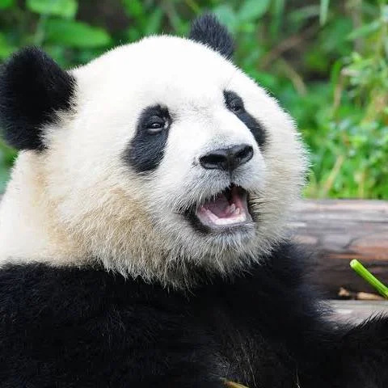
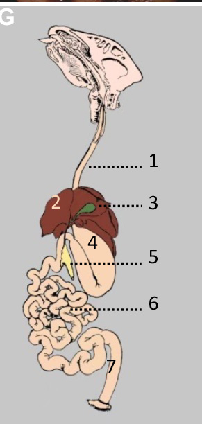

A carnivore's gut, running almost entirely on bamboo.
Giant pandas live in the bamboo forests of a handful of mountain ranges in central China, usually somewhere between 4,000 and 11,000 feet up. They're not social animals: outside of the spring breeding season, a panda mostly keeps to itself and communicates through scent marking instead of direct contact. Here's the part that trips people up: pandas are actually carnivores. They sit in the same order as dogs, cats, and bears. You'd never guess it from what they actually eat.
About 99% of a panda's diet is bamboo, stems, leaves, shoots, all of it. To actually grip the stuff, pandas evolved an enlarged wrist bone called the radial sesamoid that works like a thumb. It's not a real thumb, but it gets the job done, letting the panda hold a bamboo stalk almost the way we'd hold a pencil. Add in strong jaw muscles and wide, flat molars for grinding tough fiber, and you've got an animal built to process a huge volume of plant material fast. And it has to: pandas eat for 10 to 16 hours a day because bamboo gives back so little energy per bite.
Because bamboo is such a weak energy source, pandas have to be continuous feeders. There's no room for long breaks between meals. That makes them herbivores, though a pretty specialized kind, more of a dedicated bamboo browser than a general plant eater. They're not hunters (their bodies never evolved for it), and they're not really scavengers or grazers rotating between food sources either; they're locked into bamboo almost exclusively. All three of these point back to the same root issue: a gut that's still built for meat, forced to run on plants. That mismatch is exactly why a panda spends nearly its whole day just eating to break even.
Start with how food gets into the mouth in the first place: broad molars for crushing bamboo, jaw muscles strong enough to actually do it, a couple of leftover carnivore canines, and that pseudo-thumb for grip.

1: esophagus, 2: liver, 3: gallbladder, 4: stomach, 5: pancreas, 6: small intestine, 7: colon. Source: Luo et al., "Treating giant pandas," Frontline Gastroenterology (2024).
Inside, it's a monogastric setup, just one stomach chamber, no rumen, no forestomach fermentation the way a cow has. And that's really the core problem: there's barely any fermentation happening anywhere in this gut. Most fiber-eating animals lean on gut bacteria to break down cellulose, but a panda's microbiome barely touches it, it's genuinely carnivore-like despite the bamboo diet (Xue et al.). Food moves through fast, and the panda ends up digesting only around 17% of the bamboo it eats. It doesn't even have a cecum, unusual for something eating this much fiber, and its colon stays short and unsacculated instead of the big, expanded structure you'd see in a true hindgut fermenter like a horse.
This Smithsonian video walks through those internal adaptations directly, the pseudo-thumb, the short monogastric gut, all of it. It's a good look at how a body built for meat gets repurposed for bamboo, and it backs up everything covered in this section.